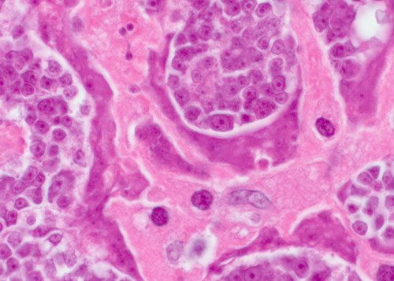

Meteorism neplăcut (eliminare de gaze) și umflare a abdomenului din cauza PARAZIȚILOR. Cel mai mare specialist în boli infecțioase le-a spus locuitorilor Bucureștiului cum să se salveze ei și apropiații lor.
De la redacție: Medicii au descoperit o nouă cauză a apariției meteorismului neplăcut și a umflării abdomenului: infectarea cu paraziți. O cercetare nu demult încheiată informează că produsele care asigură viața paraziților sunt toxice și formează în stomac un mediu propice pentru dezvoltarea bacteriilor de putrefacție. Tocmai din acest motiv la persoanele infectate cu paraziți se poate observa balonarea, și cel mai important, un meteorism neplăcut.
— Astăzi vom vorbi despre acest subiect cu șeful Centrului Privat de Parazitologie din România, domnul Constantin Popovici.
— Bună ziua, domnule Constantin Popovici! Voi începe cu întrebarea principală. Este adevărat că orașul București este lider în ceea ce privește infectarea cu paraziți a populației?
”Da, Bucureștiul deține locul întâi în clasamentul infectării cu paraziți. Cauza o constituie condițiile rele de mediu, lipsa de acțiune a autorităților și atitudinea nepăsătoare față de oameni.”
— Domnule Constantin Popovici, cât de adevărate sunt datele cercetării în ceea ce privește legătura dintre infectarea cu paraziți și meteorismul și umflarea abdomenului?
— În urmă cu câțiva ani, organizația medicilor considera că meteorismul și balonarea se formează din cauza alimentației nesănătoase. Cu toate acestea, ultimele cercetări au arătat că o altă cauză importantă este infectarea cu paraziți. Oamenii de știință au spus de asemenea, că nu trebuie ignorat un asemenea aparent ”simptom obișnuit”. Infectarea cu paraziți duce practic la apariția tuturor bolilor grele ale omului.
Meteorismul este un semn evident al existenței paraziților în organism, fapt care duce la complicații fatale
Eu însumi am încredere în cercetarea făcută și pot să spun că acest fapt a fost confirmat și de cercetările realizate de centrul nostru. Banalul ”miros neplăcut” în caz de meteorism se transformă într-o boală serioasă. În general, aproape 90% dintre decese sunt provocate de infectarea cu paraziți. Și nu este vorba doar de decese provocate de boli. Majoritatea așa numitelor ”morți naturale” sunt consecințe ale acțiunii paraziților în interiorul corpului vostru.
— De obicei prin paraziți se înțelege că este vorba despre banalii viermi intestinali. Cum pot ei provoca apariția mirosului urât din gură și chiar moartea omului?
— De fapt, este o mare greșeală faptul că paraziții sunt considerați a fi exclusiv doar viermi intestinali. Există o mulțime de diverși paraziți, care trăiesc în diferite organe. Și duc la tot felul de consecințe. Dar și viermii intestinali, sau dacă e să ne exprimăm mai exact, helminții sunt foarte periculoși. Ei literalmente distrug intestinele, ducând la putrezirea lui și în final la deces. Și apropo, chiar și helminții sunt greu de descoperit și de distrus.
Alături de ei există mii de paraziți, care pot trăi în ficatul, creierul, plămânii, sângele, stomacul dumneavoastră. Și practic toți sunt mortali. O parte dintre ei încep imediat să acționeze agresiv și distrug organismul. O parte acționează o vreme pe neobservate, până când numărul lor devine așa de mare încât organismul purtător deja nu mai poate face față și persoana moare.
Totodată, pot afirma cu tărie că practic toți oamenii sunt infectați cu paraziți. Pur și simplu majoritatea acestora sunt foarte greu de detectat. Iar când apar efectele infectării cu paraziți, medicii încearcă să le trateze anume pe acestea. Chiar și în cazul autopsiei, sunt necesare analize speciale pentru detectarea paraziților.
”Există mii de paraziți care pot trăi în ficatul, creierul, plămânii, sângele, stomacul dumneavoastră. Și practic toți sunt mortali. Și totul începe de la o simplă balonare”
— Puteți da câteva exemple concrete de infectare cu paraziți?
— Pot să vă vorbesc despre sute de cazuri. Însă, mă voi opri la cele care vor demonstra cel mai clar pericolul paraziților.
În primul rând, după cum s-a arătat, cestodele pot provoca cancerul. Însă în mod formal nu se infectează persoana însăși, ci anume viermii intestinali. Dar celulele lor maligne se răspândesc în tot organismul, infectând persoana. Acest lucru se întâmplă când larvele viermilor ajung din intestine în nodurile limfatice ale omului. În final, ele se transformă în tumori canceroase, care infectează repede persoana . Decesul intervine efectiv în câteva luni. Chiar săptămâna aceasta a mai fost identificat un deces provocat de asemenea tumori.
În centrul acestei fotografii: celulele unei tumori maligne, care se transmit omului de la viermele parazit.

Un alt caz răspândit este infectarea cu paraziți a creierului uman. Acest lucru duce la nevroze, oboseală rapidă, hiperexcitabilitate și schimbări bruște ale dispoziției. Iar în stadii mai avansate, pe măsură ce creierul se umple cu paraziți, se dezvoltă boli mult mai serioase, care în final duc la moarte.
”Noi avem o arhivă foto cu fotografii făcute la autopsii, asupra locurilor unde au fost găsiți paraziții în organe. Nu pot să vă arăt aceste fotografii, sunt groaznice.”
Al treilea exemplu este infectarea cu paraziți a inimii umane. Se consideră a fi o boală slab răspândită. Dar de fapt într-o oarecare măsură viermii inimii există la aproape 23% din oameni. Adică practic la una din patru persoane. În stadiile incipiente sunt absolut inobservabili, influența lor asupra organismului este nulă. Dar cu cât trece mai mult timp, cu atât este mai vizibilă acțiunea viermilor în inima omului. Anume ei constituie prima cauză a unui număr mare de boli de inimă, iar dacă e să vorbim despre moartea subită din cauza stopului cardiac, atunci aproape 90% din aceste cazuri sunt provocate de acești paraziți.
— Ce alte pericole mai prezintă infectarea cu paraziți?
”La bărbați paraziții provoacă: prostatită, impotență și, mai departe, adenom, cistită, nisip și pietre la rinichi, în vezica urinară.
La femei: dureri și inflamarea ovarelor. Se dezvoltă fibroame, miomuri, mastopatie fibrochistică, inflamarea glandelor suprarenale, a vezicii urinare și a rinichilor. Și, bineînțeles, are loc îmbătrânirea prematură a pielii.”
— Cum să ne protejăm de paraziți? Există cumva analize, medicamente?
— Din păcate, se poate constata că în ziua de azi nu există instrumente cu adevărat precise pentru diagnosticarea paraziților din corpul uman. În parte acest fapt are legătură cu existența unui număr foarte mare de tipuri de paraziți (mii de variante), în parte, cu nivelul foarte ridicat al dificultății detectării lor. În România, analizele complete pentru detectarea paraziților sunt accesibile efectiv în câteva locuri și costă foarte mult.
Primele simptome, după care se poate spune că aveți paraziți, sunt:
- Meteorism și umflarea abdomenului
- Miros neplăcut al gurii
- Alergie (erupții cutanate, lăcrimarea ochilor, rinoree)
- Răceli frecvente, angină, nas înfundat
- Oboseală cronică (Obosiți repede, orice ați face)
- Dureri de cap dese, constipații sau diaree
- Dureri articulare și musculare
- Nervozitate, tulburarea somnului și a apetitului
- Cearcăne, pungi sub ochi
La prezența a 2 simptome dintre cele enumerate, în organismul dumneavostră există cu siguranță paraziți.
Dacă e să vorbim despre medicamente, atunci este problematic. În ziua de azi există un singur remediu care permite vindecarea de paraziți, remediu care, apropo, este făcut în România.
— Ce fel de remediu este și de cine este făcut, ne puteți da mai multe detalii?
— Germitox este un remediu antiparazitar, la crearea căruia a participat centrul nostru privat de parazitologie și un grup de oameni de știință tineri independenți. În paralel am lucrat la elaborarea a douăzeci de remedii pentru paraziți. Însă în procesul de elaborare s-a luat decizia de a ne opri anume la remediul Germitox, ca varianta cu cea mai mare eficiență.
Germitox este un amestec unic de coada șoricelului, cuișoare și țintaură. În procesul de elaborare și de testare, acest remediu s-a dovedit a fi deosebit de eficient. Astăzi este într-adevăr singurul progres semnificativ. Și dacă ar fi fost vorba doar de bani, atunci toată cantitatea produsă s-ar fi dus la export. În vest toți sunt gata să cumpere Germitox indiferent de preț. Însă noi avem un ordin din partea autorităților, conform căruia o cantitate semnificativă de trebuie să rămână în țară și să se vândă cetățenilor români.
Mai mult decât atât, adaosul comercial de export pentru cumpărătorii din vest (Germitox se vinde în străinătate la un preț de zece ori mai mare decât valoarea lui), ne permite să-l vindem mai ieftin pe teritoriul țării..
— De ce este așa de bun Germitox? Se deosebește prin ceva de celelalte variante de curățare a organismului de paraziți?
— După cum am spus deja, în ziua de azi este singurul remediu eficient pentru curățarea organismului de paraziți, în general, din lumea întreagă. Tocmai de aceea sunt așa de interesate de el rețelele farmaceutice internaționale și companiile farmaceutice. În comparație cu alte preparate antiparazitare, acest remediu acționează imediat împotriva întregului spectru de paraziți, cu care se pot infecta oamenii. Având în vedere problemele cu diagnosticarea, acesta permite o curățare eficientă a întregului organism. Am spus deja mai sus că este practic imposibil de înțeles cu ce paraziți este infectat omul. Dar Germitox distruge și elimină toți paraziții din organism, indiferent unde s-ar afla: de la creier și inimă până la ficat și intestine. Nici unul dintre preparatele existente în ziua de azi nu poate face așa ceva.
În plus, nu este un medicament chimic, ci un produs complet natural, care nu produce reacție alergică, dezechilibru intestinal și alte probleme care pot apărea în cazul tratării cu medicamentele clasice, care pe lângă efectul pe care îl au mai și suprasolicită organismul, silindu-l să prelucreze o mulțime de variați compuși chimici.
— Cred că ar fi interesant pentru cititorii noștri să afle de unde pot cumpăra Germitox?
— În momentul de față Germitox este accesibil doar pentru comanda
de pe site-ul proiectului. Am încercat de multe ori să pătrundem în cadrul rețelelor farmaceutice, însă acestea vor să-i pună cel mai mare preț, și să-l vândă de câteva ori mai scump decât ne dorim noi. Înțelegeți, Centrul Privat de Parazitologie nu este o structură comercială. Și scopul nostru nu este acela de a face profit. Noi dorim doar să asigurăm întregii populații acest produs. De aceea îl vindem în pierdere, compensând diferența cu vânzarea sa la export. Iar scopul principal al rețelelor farmaceutice este de a face profit. De aceea avem abordări diferite în ceea ce privește stabilirea prețurilor.
Sper că o dată cu trecerea timpului vom putea ajunge la o înțelegere, iar Germitox se va vinde la același preț în rețelele de farmacii. Deocamdată poate fi comandat doar online. Ne-am străduit să facem totul comod și simplu. Remediul se livrează prin poștă sau curierat, iar plata se face doar după primire și verificare. Nu trebuie să faceți nimic în plus.
— Poate vreți să le spuneți ceva cititorilor noștri înainte de a încheia interviul?
— Singurul lucru pe care vreau să-l spun este să aveți grijă de viața și de sănătatea dumneavoastră. Puteți să nu vă dați seama de acest lucru, dar cu o probabilitate de 97-98%, în corpul dumneavostră trăiesc paraziți. Ei pot fi oriunde: în sânge, intestine, plămâni, inimă, creier. Paraziții literalmente vă mănâncă pe dinăuntru, în același timp otrăvind organismul. În final, apar o mulțime de probleme de sănătate, care scurtează viața cu 15-25 de ani. Asta dacă nu luăm în calcul problema morților subite, care de asemenea sunt legate de acțiunea paraziților asupra organismului uman.
P.S.: L-am rugat pe domnul Constantin Popovici să facă o reducere suplimentară pentru cititorii noștri. El ne-a satisfăcut dorința, iar acum fiecare poate achiziționa Germitox cu o reducere suplimentară.
Interviu realizat de Cristina Stănescu
Fotografii din surse publice
Cantitatea produsului este limitata, grăbiți-vă să comandați până nu e prea târziu!
Reducerea dvs. expiră peste:
10 : 00
Fiți atenți, oferta este limitată și e valabilă până
Comandă Germitox de la Centrul Privat de Parazitologie cu reducere
Veronica Stamate, Iași -
Vă mulțumesc pentru articol! Mi-am comandat și eu acest remediu.
Mihai Nicolae, Târgu-Mureș -
Și eu am comandat. Mi-au promis că mi-l livrează în cursul săptămânii. Aștept.
Diana, Constanța -
Am luat Germitox. Efectul este pur și simplu extraordinar. M-am simțit tânără și sănătoasă. Imunitatea s-a îmbunătățit vizibil. În 8 luni de când am făcut tratamentul nu m-am îmbolnăvit niciodată. Înainte doar puteam visa la asta. Vi-l recomand tuturor.
Elena Cristea, Sibiu -
De curând am văzut o emisiune la televizor despre paraziții la om. Acolo se vorbea despre acest remediu, se lăudau că la noi a fost creat cel mai bun remediu din lume împotriva paraziților. După părerea mea era chiar un mare specialist.
Alexandra Popescu, Timișoara -
Bunica m-a învățat să alung paraziții cu pelin. Toată familia bea, copiii elimină limbrici. Însă nu am putut face nimic în privința mirosului urât din gură și a eliminării permanente de gaze. Am comandat Germitox. Acum nu mai am probleme. Apropo, am încetat să mai bem acel pelin amar și am trecut la picăturile Germitox. Efectul este același, prețul este bun, este comod de consumat.
Paul Țintă, Buzău -
Am suferit mult timp de dureri de cap. Am luat Germitox câteva luni. Mi-a trecut totul. Acum mă gândesc, poate acolo trăia ceva...
Iulia Nedelcu, Călărași -
Interviul este foarte interesant, mulțumesc! Deschideți ochii oamenilor!
Ana Mirică, Vaslui -
Mă alătur și eu recomandărilor. Când am început să-l iau, așa niște chestii ieșeau din mine, că am intrat în panică și m-am dus la capitală. Am găsit un medic parazitolog, m-a consultat și mi-a spus cică ar fi viermi din ficat. Și dacă nu ar fi fost Germitox, m-ar fi omorât după vreo 2-3 ani.
Ioana Peșcă, Ploiești -
Dar nu este înșelătorie? De ce se vinde pe internet?
Crina Dănilă, Cluj -
Ioana, ai citit articolul? Se vinde pe internet, deoarece ciubucarii din farmacii vor să facă profit și din asta! Dar despre ce înșelătorie poate fi vorba, dacă plata se face la primire? Eu am comandat, mi l-a adus curierul, am verificat totul, m-am uitat și abia apoi am plătit. Și la poștă se procedează la fel, plata se face ramburs. Dar acum pe internet se vând de toate, de la îmbrăcăminte și încălțăminte, până la tehnică și mobilă.
Ioana Peșcă, Ploiești -
Îmi cer scuze, nu am observat înainte pe site informația despre plata ramburs. Atunci sigur totul este în regulă, dacă plata se face la primire. Mă duc să comand.
Oana Similea, Brașov -
Un remediu excelent. L-am luat și eu și soțul meu. Amândurora ni s-a îmbunătățit dispoziția. Într-adevăr, parcă am întinerit, avem mai multă putere și dorință. Paraziții, fără îndoială, chinuiesc organismul. Când scapi de ei te simți cu totul altfel.
Vlad Ionescu, Giurgiu -
Vă mulțumesc pentru îndrumare. Trebuie să-mi curăț organismul. Măcar o dată-n viață. Nu am făcut asta niciodată, însă acum cred că va fi mai bine fără paraziți:) Căci sigur am câțiva. Câte nu aduni în viață.
Iulia Albu, București -
Am citit comentariile și am înțeles că trebuie să-l iau) Mă duc să fac comandă.